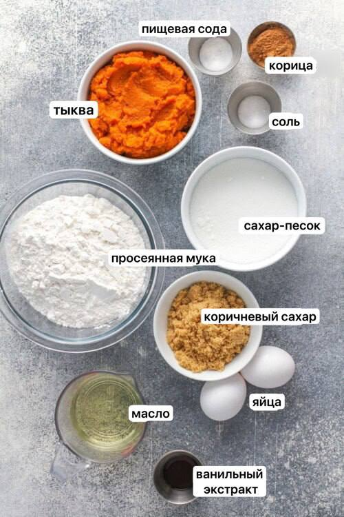

Почему вам нужно попробовать этот рецепт?
Осенние холодные вечера - самое уютное время, когда хочется собраться с семьёй или друзьями, и в приятной и уютной обстановке выпить чай с чем-нибудь пряным и по-осеннему ароматным. Например, с тыквенным хлебом, к приготовлению которого мы сейчас же и приступим!
Ингредиенты

- 1 ¾ стакана муки
- 1 чайная ложка молотой корицы
- 1 чайная ложка соды
- ½ чайной ложки соли
- 400 г тыквенного пюре
- 1 стакан сахара
- ½ стакана коричневого сахара
- 2 яйца
- ½ стакан растительного масла
- 1 чайная ложка ванильного экстракта
Также по желанию можете добавить грецкие орехи и любимые специи.
Как приготовить тыквенный хлеб
- Сухие ингридиенты: Смешайте муку, корицу, соду и соль и пока оставьте.
- Влажные ингридиенты: Смешайте тыквенное пюре, сахар и коричневый сахар. Затем взбейте яйца, растительное масло и ванильный экстракт.
- Перемешайте: Медленно перемешайте сухие ингридиенты с влажными до однородной консистенции теста.
- Запекайте: Выложите тесто в квадратную форму. Запекайте в течение 50 минут, время от времени проверяя готовность хлеба прокалыванием зубочисткой. Когда зубочистка станет сухой после вынимания из хлеба - он готов.
- Подавайте: Дайте хлебу остыть примерно 10 минут, Затем выньте его из формы. Подавайте тёплым.
Приятного аппетита!
Советы по приготовлению
- Не перемешивайте слишком долго: Перемешивайте тесто ровно столько, чтобы не образовались комочки, а затем вылейте в форму для выпечки. Пергаментная бумага: Смажьте форму для выпечки маслом и застелите ее пергаментной бумагой, чтобы хлеб не прилипал к ней.
- Накройте его фольгой: Тыквенный хлеб получается очень влажным и плотным, поэтому выпекание займет некоторое время. С внешней стороны он будет готов быстрее, чем в середине. Чтобы верх не подрумянился, неплотно накройте тыквенный хлеб алюминиевой фольгой примерно за 25 минут до готовности.
- Добавьте орехи или шоколадную стружку: Вы можете добавить в тесто ½ стакана шоколадной стружки или ваши любимые орехи, измельчённые или целые.
Польза тыквы
Тыква — это не только вкусный, но и полезный продукт. Она богата витаминами A, C и E, а также содержит множество антиоксидантов и клетчатки. В 100 г тыквы в 5 раз больше бета-каротина, чем в моркови, а белка больше, чем в перепелиных яйцах!
- Витамин Т, содержащийся в мякоти ускоряет метаболизм, препятствует накоплению жиров, помогает похудеть и оказывает профилактику атеросклероза;
- Калий и магний укрепляют сердечную мышцу и стенки сосудов, препятствуют развитию гипертонии;
- Витамин А укрепляет защитные силы организма, поддерживает остроту зрения, работает как антиоксидант, препятствуя разрушительному действию канцерогенов и свободных радикалов;
- Фолиевая кислота в сочетании с витаминов С укрепляют иммунитет, отвечают за нормальное функционирование кровеносной системы;